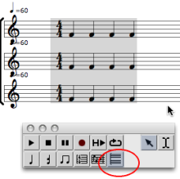
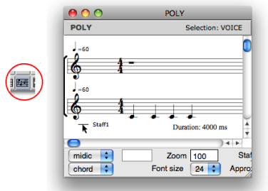
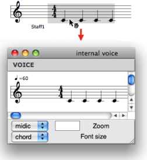
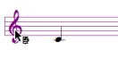
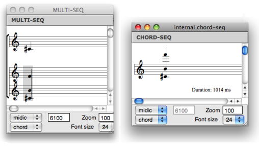
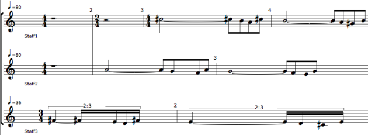
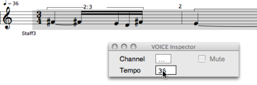

OpenMusic DocumentationHiérarchie de section : OM 6.6 User Manual > Score Objects > Score Editors > Polyphonic Objects
OpenMusic DocumentationHiérarchie de section : OM 6.6 User Manual > Score Objects > Score Editors > Polyphonic Objects
Navigation : page précédente | page suivante
Attention, votre navigateur ne supporte pas le javascript ou celui-ci à été désactivé. Certaines fonctionnalités de ce guide sont restreintes.
Polyphonic Objects : Poly and Multi-seq Editors
Common Features
A poly and a multi-seq objects are a superimposition of voices or chord-seqs . They both have one additional tool : the poly tool , which allows to edit all voices at once. |

|
Add / Delete Staves
To add a staff :
select the voice or the poly tool ,
to add a new staff,
Cmdclick on a staff.
Notice that new staves are automatically added above the "lower" staff .

To delete a staff :
select the voice tool,
click and drag a staff
press
backspace.
Respacing Staves
As in voices editors, staves can be moved up of down, and consequently, respaced.
To respace staves :
click on the clefs of the staves you want to respace
use the
↓↑keys.
Internal Voice or Chord-Seq Edition

|
To open a voice or a chord-seq as an internal object from a poly or a multi-seq :
|
Individual Chord-Seq and Voice Staff Configuration
To define clefs individually :
|

|
Remember that multiple staves configurations – e.g. FF, GF, GGFF etc. – do not allow individual staff editing or respacing.

Poly Editor and Multi-Seq Specific Features
Poly : Polytemporality and Polymeter
Within a poly, each voice can have its own time signatures, channel and tempo, so as to build polytemporal and metric structures. The score is then organized according to absolute durations.

To change the tempo or midichannel of a voice :
select the voice
enter a value or scroll the mouse up or down in the voice inspector.
To change the meter of a measure :
select it with the measure tool
enter values in the measure inspector.

Multi-Seqs : Internal Chord-Seq Edition
Within a multi-seq, chord-seqs must be open in internal windows to be edited separately.
Références :
Plan :
Navigation : page précédente | page suivante
A propos...(c) Ircam - Centre Pompidou